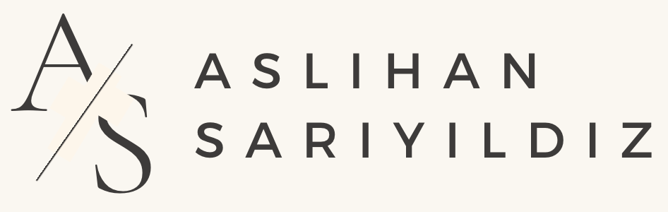

<nav class="navbar navbar-expand-lg navbar-light">
    <a class="navbar-brand" href="./index.html"></a>
    <button class="navbar-toggler" type="button" data-toggle="collapse" data-target="#navbarSupportedContent" aria-controls="navbarSupportedContent" aria-expanded="false" aria-label="Toggle navigation">
      <span class="navbar-toggler-icon"></span>
    </button>
    <div class="collapse navbar-collapse" id="navbarSupportedContent">
      <ul class="navbar-nav ml-auto">
        <li class="nav-item">
          <a class="nav-link" aria-current="page" href="./index.html">Çalışmalarım</a>
        </li>
        <li class="nav-item">
          <a class="nav-link" href="./hakkimda.html">Hakkımda</a>
        </li>
        <li class="nav-item">
          <a class="nav-link" href="asCV.pdf" target="_blank">CV</a>
        </li>
      </ul>
    </div>
  </nav>
